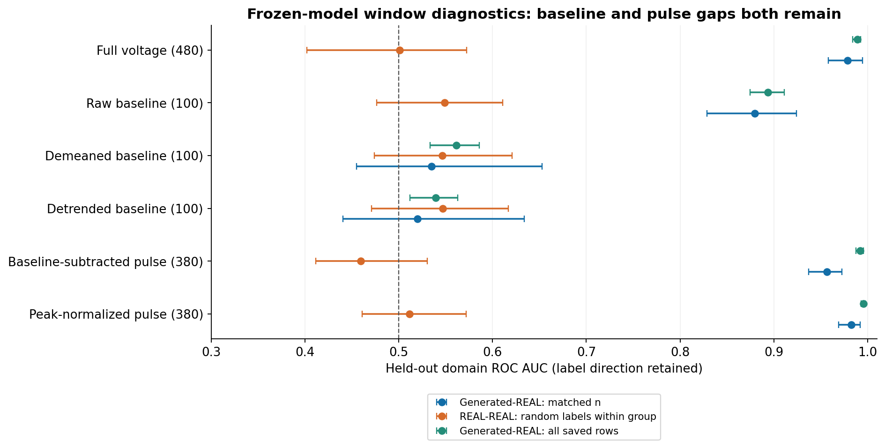
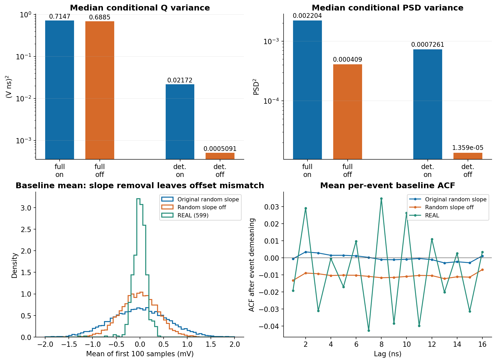
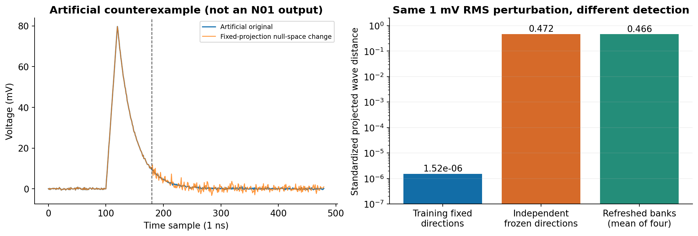

N01 冻结模型机制复核
2026-10-12 · 冻结基准 2c501e9 · 新增响应模型训练更新 0 · 诊断分类器更新 4800
电子学统计分解与固定投影盲区均获复核。基线偏置足以形成域差异；去除该信息后，脉冲及归一化形状仍明显可分。当前结果支持先独立修复电子学，同时保留对脉冲模型和损失的检查。
1. 分窗口分类器：基线与脉冲都存在差距
下表SOURCE–REAL指full模型生成响应与实测的比较，不是清洁源波形与实测的比较。匹配样本量的两域各用128个拟合、96个测试事件；SOURCE每父只取一个预先固定响应。拟合/测试父事件和REAL原组隔离。补充阴性对照在同一角色的每个REAL组内随机分配标签，事件不复用；不确定度共同重采样原组。测试仅5个REAL组。完整支持列复用原保存总体和划分；三种列均为独立拟合的固定200更新分类器。
| 视图 | SOURCE–REAL 匹配样本 AUC | REAL–REAL 随机标签 AUC | SOURCE–REAL 全支持 AUC |
|---|
| 完整电压 | 0.978 | 0.501 | 0.989 |
| 原始基线 | 0.879 | 0.549 | 0.894 |
| 去均值基线 | 0.535 | 0.547 | 0.561 |
| 去趋势基线 | 0.520 | 0.547 | 0.540 |
| 减基线脉冲 | 0.956 | 0.460 | 0.992 |
| 峰值归一化形状 | 0.982 | 0.512 | 0.995 |
AUC标签方向保留，接近0.5意味着本分类器难以区分。去均值/趋势后的弱区分不证明完整相关噪声已经匹配。独立窗口分类器定位可用的域信息，不证明原训练判别器实际使用了哪种特征；窗口长度不同时全连接层参数量也不同，不能把AUC差异视为严格等容量的因果分解。24个保存分类器的缩放、测试预测与AUC已重开核对。

原预定四向原组分域的REAL–REAL结果为0.397–0.423，原结果完整保留为组移位压力对照。上述组内随机标签控制是看到这个问题后的公开补充分析；六个区间均包含0.5，未重选网络、预算或种子。
2. 仅关闭随机斜率：同噪声配对干预
full和deterministic均固定128个父事件×64个噪声响应。恢复原CPU噪声流并保存全部显式随机数，只将electronics_slope置零，保留斜率均值、其它随机量、模型权重和ADC。下表为跨父事件的条件方差中位数，统一使用ddof=1。原审查full≈0.703来自ddof=0；同一原数组在ddof=1下为0.714665，不是不同训练结果。
| 模型 | Q方差：原斜率 | Q方差：斜率关 | PSD方差：原斜率 | PSD方差：斜率关 |
|---|
| full | 0.71467 | 0.68853 | 0.0022044 | 0.00040904 |
| deterministic | 0.021724 | 0.00050908 | 0.00072609 | 1.3592e-05 |
斜率的电荷系数为120000/479 = 250.52192067。冻结参数给出的随机斜率Q方差为0.021185，滤波白噪声Q方差为0.00050287（单位均为(V·ns)²）。配对方差差额同时含有限样本交叉协方差，不能直接把两个方差相减当作独立因果百分比。
基线均值标准差由0.6068 mV变为0.3882 mV；REAL为0.1533 mV。关闭斜率后仍有偏置分解和相关结构残差。这是机制干预，不能作为修复模型发布。
确定性模型的条件Q方差中位数降低97.7%；full的条件PSD方差中位数降低81.4%。这些是固定模型中的干预变化，未校准物理方差。

另按原TRAIN的8个输出Q箱保存PSD标准差与描述性双高斯结果。关闭斜率后，full有900/8192行迁移Q箱，确定性模型有923/8192行迁移；因此同时保留重新分箱与固定原箱成员两种口径。两高斯成分不等同于真实粒子标签，重复父事件也不等于8192个独立实测事件。
重放与量化差异、所有非正Q/PSD数值保护/饱和计数、preADC恒等式残差和每父指标保存在相邻机器可读报告中。所有输入行保留；跨设备位级重放仅按实际检查结果报告。
3. 固定投影视角的人工盲区
96条人工波形，仅修改第180点以后；每条全480点扰动RMS=1 mV，最大单点改变6.077 mV。194条线性约束秩为193，零空间维数为107。基线、峰位、Q和PSD保持到数值误差。当前float32实现的wave距离为1.52e-06；独立冻结方向库为0.4720。

这复现了盲区机制，没有强求原人工包的完全相同数值。测试不含ADC、对抗项和正则项，也不证明旧模型利用了该零空间。受限FIR族的一阶总体自相关绝对值上确界为192/16705≈0.0114936，支持原审查给出的保守界。它单独针对白噪声经过受限平稳滤波器，不能套到叠加漂移并每事件去均值后的观测ACF。
4. 下一修复边界
保留U-Net主干，先实现平稳相关噪声＋事件基线偏置的独立候选；采用自由FIR系数与L2归一化，暂不默认加入逐事件随机斜率。完整基线联合验证未通过就停在噪声模块。随后刷新训练投影、复用一次双遍的方向，采用独立评价方向与逐坐标/短延迟检查，再做统一计数权重下必要的确定性和随机响应对照。
本轮未改响应模型、未训练新的噪声候选，也未启动脉冲重训。验证集已用于本次诊断，后续不能再称为未查看的独立终验。所有数据仍来自同次采集，真实物理权重与绝对硬件校准没有新增证据。
汇总数值 · 预定窗口诊断 · 补充阴性对照 · 24个分类器重开核验 · full斜率干预 · deterministic斜率干预 · 输出Q分箱峰宽 · 投影与FIR核验